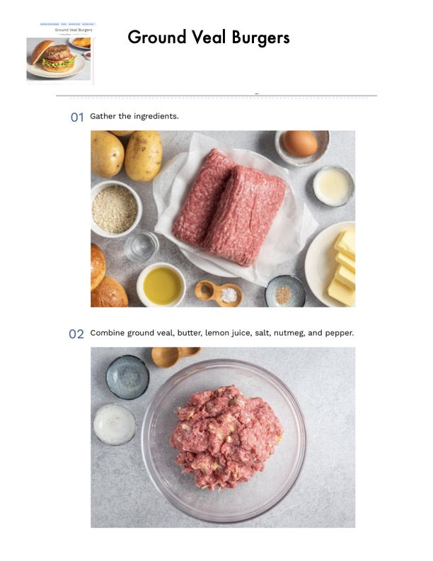

Ground Veal Burgers

Original cookbook page 276
Pan-fried ground veal patties coated with breadcrumbs, creating tender and flavorful burgers. Recipe from The Spruce Eats.
Prep: 15 minutes • Cook: 20 minutes • Total: 35 minutes
Ingredients
- Ground veal (enough to form 6 patties, approximately 1½-2 lbs)
- 2-3 tablespoons butter
- 1 tablespoon lemon juice
- Salt to taste
- Pinch of nutmeg
- Pepper to taste
- 1 egg
- 2 tablespoons water
- Breadcrumbs for coating
- Oil for frying
- Burger buns for serving
Instructions
- Gather the ingredients.
- Combine ground veal, butter, lemon juice, salt, nutmeg, and pepper in a bowl and mix well.
- Shape the mixture into 6 veal patties.
- In a shallow bowl, mix together the egg and water to create an egg wash.
- Dip patties into egg and water mixture, then coat thoroughly in breadcrumbs.
- Heat oil in a heavy skillet over medium heat. Brown coated veal patties on both sides in hot oil, then reduce heat and cook for 15 minutes, or until veal patties are done and cooked through.
- Serve as is with potatoes or other side dishes, or as a burger in a sandwich.
Recipe #276 from collection